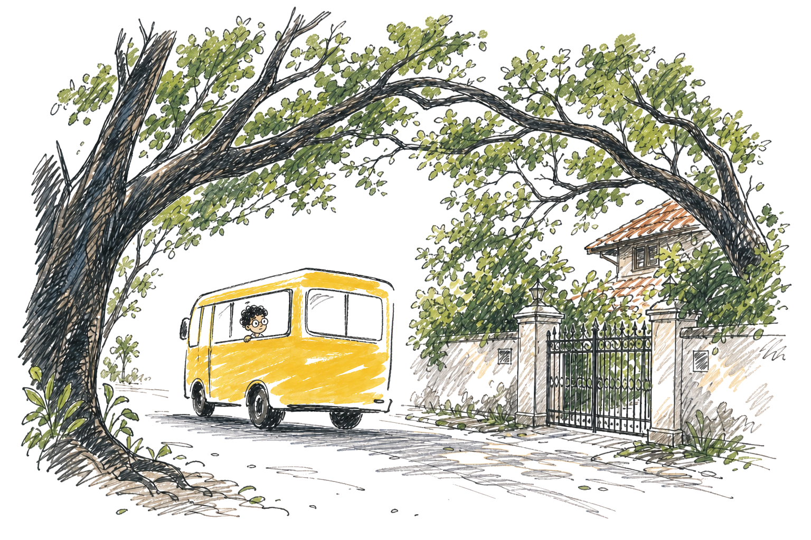
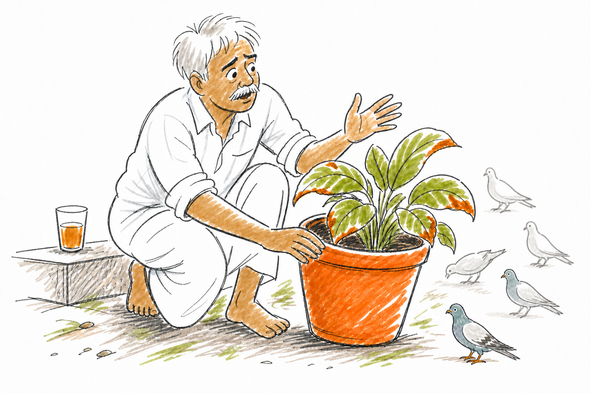

Chapter 1 — The Rainbow on the Wrong Wall
≈ 2,750 words · 10 to 12 minutes read
Dad says he cycled to school. Uphill, he says, both ways, which is a thing every dad in Rajgudi says and no dad in Rajgudi can prove.
I take the yellow bus.
Rajgudi is one of the fastest-growing cities in the world. That is a real sentence off a real hoarding, plastered next to a photograph of a gleaming glass tower that looks exactly like every other glass tower on earth. What the hoarding does not mention is the rest of Rajgudi. It doesn't mention the colossal rain trees that meet over the cracked asphalt like old friends clasping hands, their shadows thick and cool. It doesn't mention the lakes with beautiful, ancient names and unbeautiful, choking water, or the red-tiled bungalows with intricately carved monkey-tops and wrought-iron gates that announce things like Kumar Villa, 1931.
Nobody calls that part beautiful anymore. They just call it old. When a building goes, it goes quietly on a Sunday, and by Monday it is nothing but a raw rectangle of red dust with a builder's board stabbed into its heart.
But there are still pockets. You just have to know where to walk.

First week back. All summer we had pined for school, and now that we were trapped in it, we wanted summer back—the lazy mornings, the stinging chlorine of the swimming pool, the board games with missing pieces that we played anyway.
June 1st is the first day of school, and it is usually the exact day the monsoon hits Rajgudi hard. June is supposed to be wet. It is supposed to mean raincoats, the squelch of wet school shoes, and those oblivious kids with giant umbrellas who threaten to take out an eye per corridor. Not this year. This year it is climate change, or el neeno, or hell nano, or whichever invisible phantom it is—the grown-ups invoke a different name every week, and none of them say it like they are sure. The sky has been a heavy, washed-out white for three weeks, trapping the heat like a lid on a pot. The newspaper says the city's drinking water will hold until December if we are careful, which actually means it will hold until December only if somebody else is careful.
So we pray it rains. We just pray it doesn't rain on Thursdays, because Thursday is basketball.
Geography, fourth period. Sujata Ma'am is standing at the panel, the glowing flat screen they bolted to the wall when they tore out the blackboards. No chalk anymore. No swirling chalk dust dancing in the sunbeams, which I did not know was a thing I would miss until it was gone.
She reads the slides. She doesn't read them badly, but she reads them with the weary rhythm of a marathon runner who just wants the race to end. Forty-one slides in the deck, thirty-one of us in the room, a terrifying term test looming on the horizon, and high above the door a clock that never slows down.
And these slides made that easy, because they never left anything open. They came in tidy pairs—a question on one line and its answer bolted to the very next, arriving together in a single breath. Why are the seasons in India and Australia opposite? India lies in the northern hemisphere and Australia in southern. Where does the noon sun come from in India? The south. Question, answer, closed. I counted them much later, when I finally knew what to look for: in the whole forty-one-slide deck, not one question had been left standing open.
Ved was at the window with his scale.
Our classroom this year faces out, not in. The school is built around a grand, central quadrangle—chemistry labs on the ground floor because that is where the heavy drains are, biology at the top to catch the light, and the library right by the main entrance so that important visitors can immediately see we have one. Some classrooms look inward at the quadrangle. Ours looks outward over the bus park, and because of the endless roar of traffic, our windows stay hermetically sealed all day.
Shut, but not dark. In the mornings, a sharp, heavy slab of sunlight cuts in over the sill and lies flat across the desks. It is Ved's desk. He holds up his clear plastic scale, twisting it slowly until the bevelled edge catches the light just right. Suddenly, the blank front wall beside the flat panel is painted with a glorious, bleeding smear of color—a fierce red at one end, a deep blue-violet running off the other, and no clean, honest boundary anywhere between them.
By eleven o'clock, the slab of light is thinner. By the lunch bell, it is a narrow stripe you could cover with two fingers. Then it vanishes completely, only to return the next morning. Ved is the only person in 7B who has ever noticed this silent magic trick.
"India lies in the northern hemisphere."
Sujata Ma'am's voice went up about an octave, the way it does when she can feel the room slipping under the surface of sleep. It worked on about half of us.
"And because of the tilt of the earth, sunlight at noon reaches us from the south. This is why—"
After this period, it is lunch. Lunch was the only geography I was mentally navigating. My stomach growled, and a tiny bead of drool gathered at one corner of my mouth. Apparently my body had gone to lunch without me.
The sudden volume should have simply woken Anya. Instead, it woke her up, which is infinitely worse.
She came upright with the seam of her sleeve printed across one cheek, her hair flattened on that side, her blue ribbon crooked, and a thread of nap drool she had not yet noticed.
She jabbed her elbow into my ribs and pointed her chin at Ved. He's at the north window, she said, not even attempting a proper whisper.
I said, how do you know that's north.
She rolled her eyes and said, buses. Which—fine. The bus gate is the north gate; that is the one we pour through every morning, and parents are strictly routed to the south gate. Everybody in this school has heard that rule about two hundred times. The yellow buses were idling right there under the window. So: north window. So: Ved, sitting at the north window, bathed in sunlight, in June, at eleven in the morning, in India, which supposedly lies in the northern hemisphere.
Anya's hand shot up like a rocket.
Ma'am looked at the clock, its second hand relentlessly sweeping away her tiny margin for error. She looked at the glowing panel, at the heavy, printed certainty of the slide, and finally, she looked at us. Something happened in her face—a quiet, fleeting surrender that I didn't have a name for then. To entertain Anya's point meant stopping the machine.
"Copy this one down, all of you, quickly," she said, and her voice had gone tight. "Five minutes, or it's homework."
Anya's hand slowly came down.
I want to say I noticed. I did not. I was busy doing the brutal arithmetic of homework: it eats into dinner, and dinner is the only hour of the day my sister and I really get to bond, over food and TV and chess.
Lunch is when we escape to the blinding glare of the playground and collect our vitamins. Vitamin D from the sun, which is real. Vitamin B12 from whatever the canteen legally calls their gravy, which is also real, technically.
Anya would not shut up. Her point was that the slide was fundamentally wrong—that in Rajgudi the noon sun does not come from the south, it comes from the north—and she was going to march up and declare it to Sujata Ma'am tomorrow, and she demanded I be her witness.
I just wanted my vitamins. So I grabbed her wrist and dragged her to my sister.
Suma is fifteen. She knows more than Mum and Dad put together, and she is acutely aware of this fact, which is the only truly annoying thing about her. She was leaning against a pillar, destroying an apple in four enormous bites. She listened to about half of Anya's breathless case, swallowed, and casually pointed up with the half-eaten apple.
The solar panels. Two long, gleaming rows of them on the science block roof, lying almost flat, every single one of them tipped in the exact same direction. South.
"Panels face the sun," said Suma, chewing. "Panels face south. Sun's in the south. Eat your lunch."
Case closed. That is why my sister is the smartest person I know.
I have thought about those thirty seconds more than any other thirty seconds of my life. Everything Suma said was true. The panels do face south. Whoever bolted them to that roof knew exactly what they were doing. Suma had performed a real check, on a real object, in about four seconds, with an apple in her mouth.
It took us until Friday to work out what was wrong with it.
Four o'clock, and the yellow bus is already gone—it is a morning creature, and in any case we stay back most days: basketball, or, when it isn't basketball, the plain refusal to go straight home. So the four of us walk the long way, the one that takes us past Sir B. W. Sawan's sprawling bungalow, and pick up the wheezing public bus for the last stretch after.
Everybody in Rajgudi knows the iron gate. Nobody in Rajgudi knows the man. He won the Nobel Prize in the thirties, they knighted him before Independence, and there is a potholed road named after him two localities away that everyone stubbornly calls by its old name anyway. Ask any adult what he actually did and they will look solemn and say: he was a great man. Ask a second, pressing question and they will nod deeply and say: he was a very great man.
The plot is larger than our entire school. The house sits dead in the middle of it—four stories of faded grandeur with a wooden watchtower, wrapped in a garden that goes all the way around like a moat of green.
Narayanajja keeps that garden. He is old the way a thick, fibrous rope is old—withered, weathered, and absolutely not going to snap. At four o'clock, he sits on the stone step with his tea in a glass tumbler and shouts at the fat pigeons, who have known him for decades and are entirely unafraid.
That day, the tea had gone cold beside him, a pale skin forming on its surface.
He said the calatheas were burning. He said the hibiscus had refused to put up a single bud. He said it nervously, as though he had been caught doing something wrong.
We asked him what he normally does.
"Sahebru gave me the round," he said. Six months, then turn it all about—the heavy hibiscus pots to the sunny face of the house, the fragile calatheas to the shade, and six months later, swap them back. He has done it since he was nineteen years old. He has never once missed the six-month turn, following it with the blind devotion of a man taking a bitter medicine.
We were late. We left him there with his cold tea.

At home, I had a page of geography to meticulously copy—a page I could have copied in school for free if anyone had bothered to pause.
Thatha had the television on too loud and was actively arguing with it. He argues with the evening news the way you would argue with a stubborn friend you have known for years and long given up on—nodding, aggressively disagreeing, telling the anchor that he simply does not understand this country. He argues with the TV, but cannot get a single word out of Alexa. I have tried to teach him four times. He dismissively says the plastic girl is deaf.
Ajji has no such trouble. She asks the plastic girl for old film songs by name, and for tomorrow's weather, and she gets my bands wrong the way Thatha never manages to—wrong in a brand-new way each time, each time a shade closer, the corrections going down in ballpoint on the back of her hand. She is his opposite in every direction at once. His body is twenty years younger than hers and his world is fifty years older. Her knees have gone, and her back, and her hands on the bad mornings; there is a number for her blood pressure and a number for her sugar and one more thing she will not discuss at the table, and she recites the whole roster nightly like the evening news. But she is the only grandparent I have who knows what I am actually talking about.
And then she came to collect. Ajji has one tax and she levies it once a day, without exception: a hug and a kiss, per grandchild, non-negotiable. Until it is paid she hovers—the arm of the chair, the doorway, back at your shoulder the moment you think she's drifted off—exactly like the corpse-spirit in the Vikram and Betaal stories that swings back onto the tree every single time the king thinks he has finally carried it clear. I paid. She lifted off, satisfied, and went to bill Suma.
Thatha is also nosy in a way that no locked door has ever successfully solved. He read the words sunlight and north and south over my shoulder and launches into a story about his own grandfather—a fearsome man with eyes like flint and a voice that brooked absolutely no debate. "When my Thatha spoke, we listened," he said, his voice rising powerfully over the drone of the TV. "We didn't ask questions. We didn't point our fingers at the sky and argue with the sun. We obeyed. It was simpler then. The elders gave you the truth, and you kept it safe in your pocket. You didn't inspect it."
He shook his head at me, a profound sadness in his eyes. "Now everyone has a question. Nobody wants the comfort of just listening."
He tapped my notebook. "But Vaastu," he declared, "Vaastu knew all this before anybody."
He sat down heavily in the armchair, forgetting the evening news entirely. A properly built old house, he explained, never puts its big windows and main doors on the south face. The ancient architects didn't need a geography textbook to tell them the earth was tilted, and they knew perfectly well where India sat on the map. They understood that the fierce sun would batter the south walls for most of the year.
"If you carelessly cut a south window into a house here," he said, shaking his head at the sheer ignorance of modern builders, "you haven't built a house. You have built a brick oven."
I said mm, thinking: the slide, the panels, Suma. Anya 0: world 3. I will tell her tomorrow.
Day two, and I could not tell her, because Ma'am had noticed how much we chattered, and the seating chart had been brutally redrawn overnight by a professional.
Civics. Another slide deck. Another dark room.
Ved was at his desk with his plastic scale, because of course he was, and there was the magnificent, bleeding smear of color on the front wall beside the flat panel, red at one end and violet running off the other.
And this time, nobody had to elbow me. This time, I didn't take anyone's word for it. I turned round and looked for myself. There, down below the window, were the yellow buses. The buses are parked at the north gate. The north gate is north.
I sat there with my ears burning. The slide, the roof, Suma, Thatha—each had given me a good reason to stop looking. The actual window had waited anyway.
Then something yellow blinked at the window, a hand's width from the glass.
Not the rainbow. A single, steady point, as if a tiny lamp had switched on.
Ved followed my stare. "What?"
By then there was only glass, sunlight and my own reflection looking foolish.
"Nothing," I said.
I said nothing to Anya all day either. I would love to tell you that keeping quiet was a brilliant strategy. It wasn't.